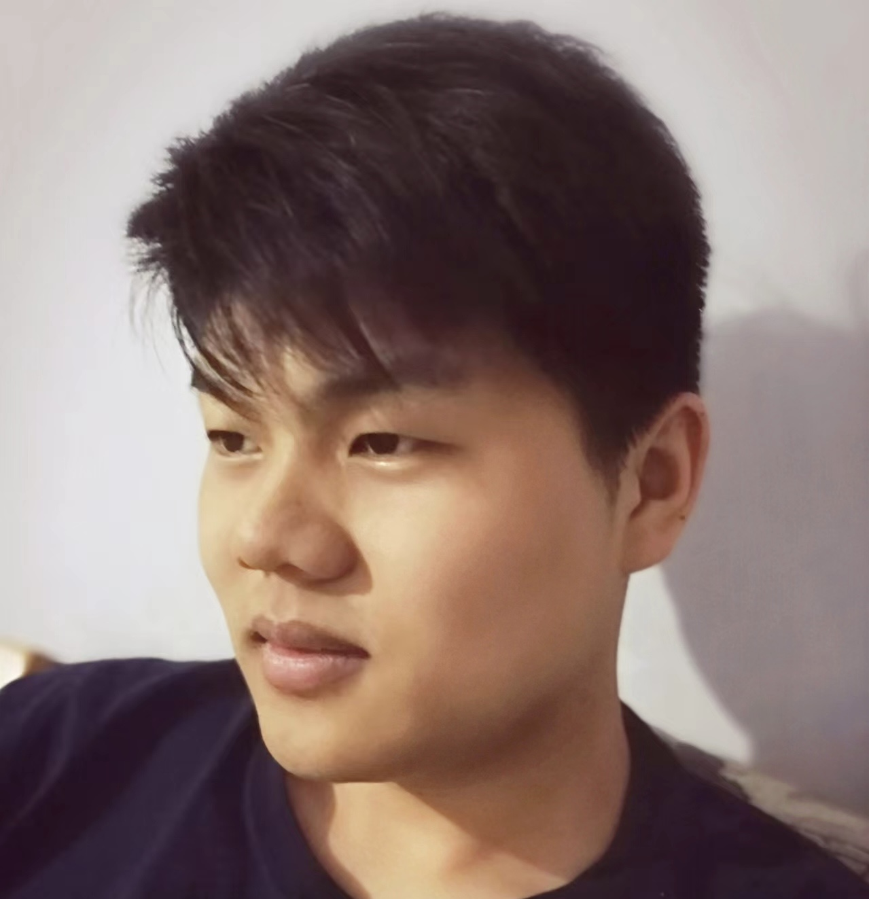

PhD Student · Emory University CS
Advised by Dr. Fei Liu, with research interests in LLM Reasoning & Planning and agentic systems.
B.S. in Computer Science & Applied Mathematics, UC Berkeley (2021). Previously ML Software Engineer at Linqia and research intern at ERIC Lab, UC Santa Cruz.
Outside research: Wing Chun practitioner & Erhu player.
AACL 2025
Probing Persona/Role-play's influence on LLM Agents' rational decision-making.
NAACL 2024
Improving zero-shot image-text matching capabilities of Vision-Language Models without additional training.
MLSys 2021
Accelerating DNN training by intelligently utilizing available GPU memory throughout the process.
Reach me at kenan.jiang@emory.edu